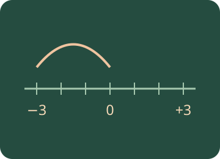

Numbers II
Make sense of signed numbers. Investigate number sets, signed arithmetic, negative bases, powers, roots and BIDMAS with integers.

What will you learn?
- Classify numbers using N, Z and Q.
- Add, subtract, multiply and divide signed numbers.
- Explain powers of negative bases, brackets and real roots.
- Use BIDMAS accurately with integer inputs.
Build the idea, one step at a time.
A signed number tells you which side of a chosen zero you mean. Positive and negative do not mean good and bad: they can represent above and below sea level, or money added and money owed. On a number line, values increase towards the right. −8 is less than −3 even though its distance from zero is greater.
Adding a signed change moves from a starting value. Subtracting a change means adding its opposite. Multiplying by a negative number reverses sign, so two sign reversals give a positive result. Brackets matter in powers: (−3)² = 9, whereas −3² = −9 because the square applies before the leading minus sign.
01 · Which number set is the smallest fit?
Use the nesting N ⊂ Z ⊂ Q and distinguish a number’s value from the way it is written.
Simplify a fraction before classifying it. A negative sign alone does not tell you whether a number is an integer.
4 is a positive whole number. Every natural number is also an integer and rational. Every integer is rational because it can be written over 1.
4: smallest set is N
02 · Travel along the number line
Add, subtract, multiply and divide signed numbers; explain what the signs mean.
Begin with addition and subtraction, then use multiplication/division. For division, try values that divide exactly.
Adding a positive number moves right; adding a negative moves left.
(-3) + 5 = 2
03 · A negative base needs its brackets
Distinguish (−a)ⁿ from −aⁿ and connect square/cube roots to signed numbers.
Write out the repeated multiplication before using sign rules. A square root symbol means the non-negative principal root.
Indices apply before an unbracketed leading minus sign. For an even index, a bracketed negative base produces a positive value; for an odd index, a negative value.
(−3)² = 9
04 · BIDMAS with integers
Follow the order of operations; multiplication and division share priority, as do addition and subtraction.
Write one line per operation. Square the whole bracket before multiplying.
Read left to right between operations of equal priority. BIDMAS does not mean always divide before multiplying or always add before subtracting.
(-3) + 2 × ((-2) − 1)² = 15
You can read these explanations without operating the simulator. The practical activities, games and revision below let you apply the ideas and check your reasoning.
Now investigate →Predict. Change. Explain.
Work on paper first, then use the controls and worked examples to check your reasoning.
These activities are practice; use the revision simulator for a test.
Class connections and further exploration
Use these models alongside your class notes. The diagrams illustrate mathematical relationships; they are not tools for measuring the physical size of your screen.
Choose “A little support” for method hints, or “Go further” for extensions. Your working notes and checks on this page are not sent to the teacher.
Try it. Solve it. Play again.
Integer Skyline and Number-Line Rover: move cards, build a model and use feedback to work out the next step.
Ready to test your understanding?
Explore 60 questions for Numbers II. Select one or more areas and question levels. Practise with explanations or take a Test yourself quiz, then retry the questions you missed.